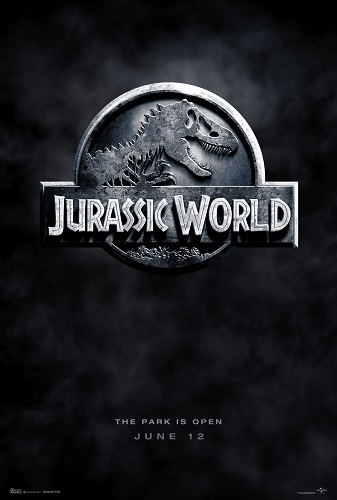
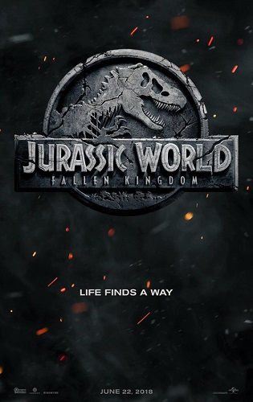
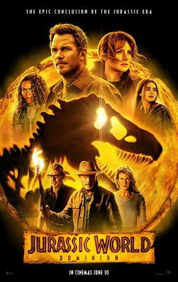
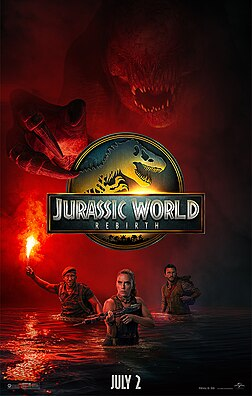

Sobre a Franchise
A franquia Jurassic World, iniciada em 2015, trouxe uma nova era para o universo dos dinossauros, combinando ficção científica, aventura, suspense e ação. A história explora os avanços da engenharia genética e as consequências da tentativa humana de controlar criaturas que pertencem a um mundo extinto.
Ao longo dos filmes, a relação entre humanos e dinossauros passa por grandes transformações, desde a criação de um parque temático até a expansão dessas criaturas pelo mundo. Em 2025, Jurassic World: Rebirth iniciou uma nova fase da franquia, apresentando novos personagens, dinossauros e desafios.

Jurassic World
2015
Sinopse
Anos após os acontecimentos de Jurassic Park, o sonho de um parque temático com dinossauros finalmente se torna realidade. O Jurassic World recebe milhares de visitantes na Ilha Nublar, mas uma nova atração é criada para aumentar o interesse do público.
O Indominus Rex, um dinossauro híbrido criado por engenharia genética, consegue escapar de seu recinto e transforma o parque em um cenário de caos. Owen Grady e Claire Dearing precisam proteger os visitantes e impedir que a criatura cause uma destruição ainda maior.
Trailer

Jurassic World: Reino Ameaçado
2018
Sinopse
Três anos após o fechamento do Jurassic World, os dinossauros vivem livremente na Ilha Nublar, que agora está ameaçada pela erupção de um vulcão. Claire Dearing retorna à ilha para tentar salvar as criaturas que ainda sobrevivem.
Ao lado de Owen Grady, Claire descobre que os dinossauros serão utilizados em um perigoso esquema de comercialização e manipulação genética. A ameaça deixa de estar confinada à ilha e passa a alcançar o mundo inteiro.
Trailer

Jurassic World: Domínio
2022
Sinopse
Quatro anos após os acontecimentos de Reino Ameaçado, os dinossauros passaram a viver espalhados pelo mundo, dividindo o planeta com os seres humanos. Owen Grady e Claire Dearing tentam proteger Maisie enquanto enfrentam uma nova ameaça.
Uma conspiração envolvendo engenharia genética coloca o futuro da humanidade em risco. Para enfrentar a crise, personagens de diferentes gerações da franquia se unem em uma luta para encontrar uma forma de coexistência entre humanos e dinossauros.
Trailer

Jurassic World: Rebirth
2025
Sinopse
Cinco anos após os acontecimentos de Domínio, os dinossauros sobreviventes vivem em regiões isoladas do planeta. Uma equipe liderada por Zora Bennett recebe a missão de coletar material genético de três das maiores criaturas existentes.
O material pode ser utilizado para desenvolver um importante avanço médico, mas a missão leva a equipe até uma ilha misteriosa onde experiências genéticas do passado escondem novos perigos. Presos no local, eles precisam lutar pela sobrevivência enquanto descobrem os segredos daquele lugar.